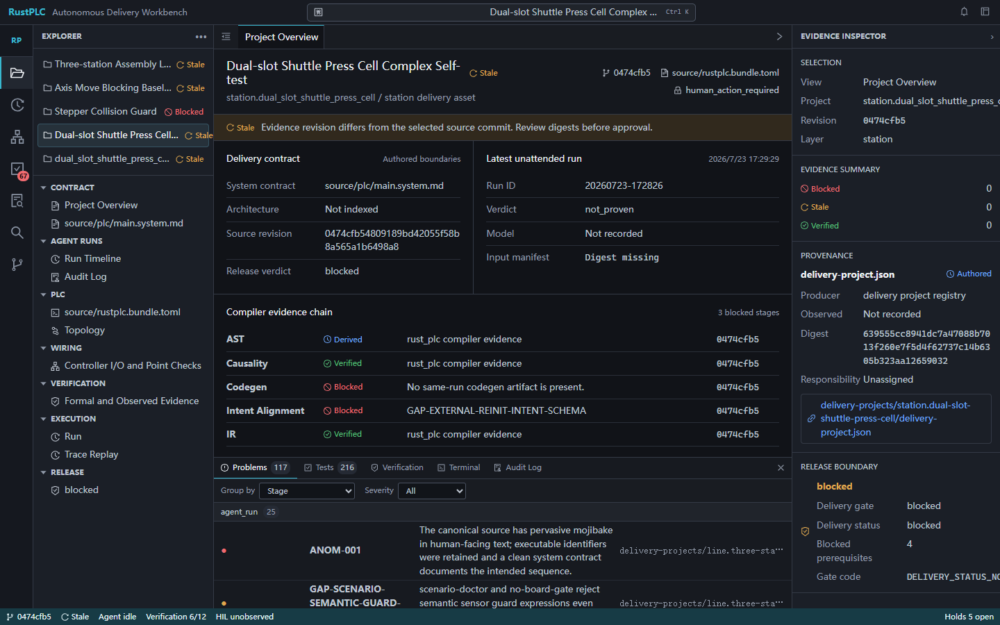
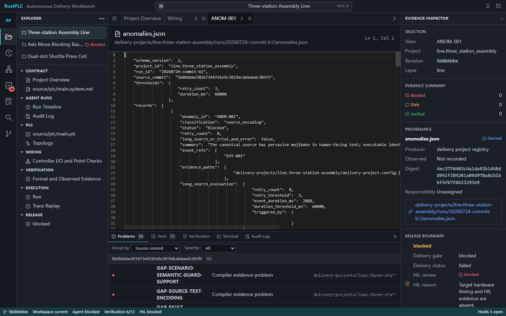
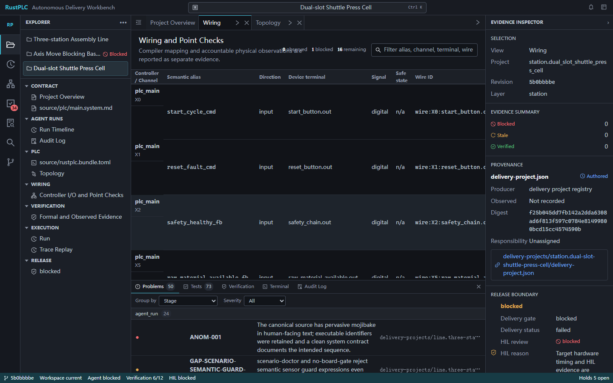
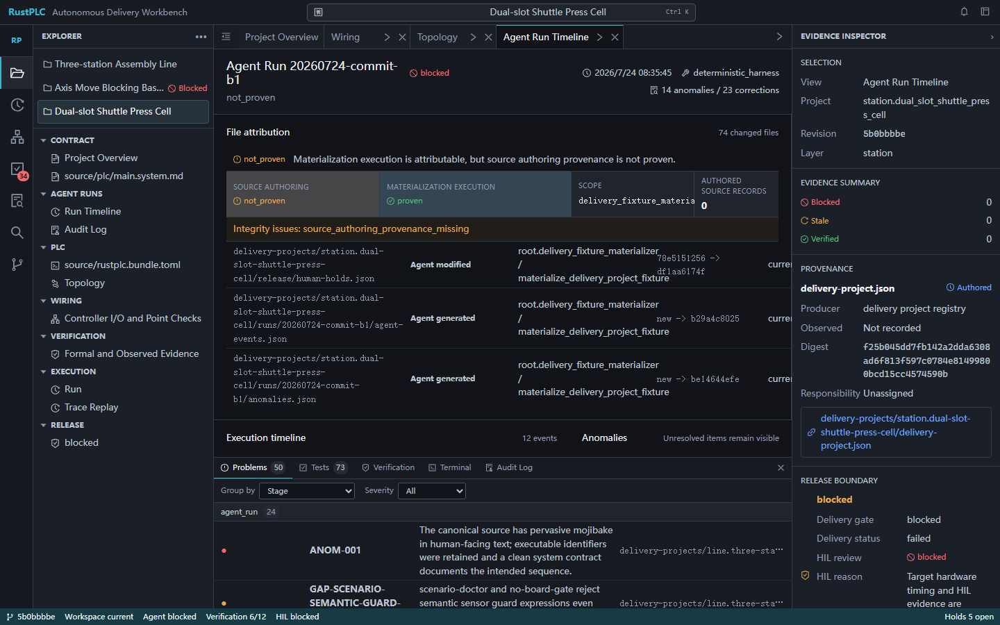

RustPLC 操作说明
这份手册说明如何创建项目、编写 source、运行验证和仿真，再通过 Cursor / VS Code 式交付工作台完成证据审查、接线点检、HIL 检查和人工放行。
1. 一条完整路径
system intent -> PLC source -> parser/semantic/IR -> verification
|
+---------------------------+---------------------------+
| | |
SIL trace ST / firmware delivery evidence
|
wiring -> HIL -> human release
CLI 工程入口
创建 source、生成 scenario、运行 project-check、仿真、导出 ST 或 release bundle。
Web 审查入口
选择 module / station / line，阅读 source、run、Problems、Tests、Topology 和 Evidence。
人工责任入口
完成 wiring point checks、物理观察、safety review、HIL review 和 release approval。
2. 安装和启动
git clone https://github.com/xxrust/RustPLC.git
cd RustPLC
cargo build --release
npm --prefix web-ui install
npm --prefix web-ui run buildCLI 帮助：
cargo run --release --bin rust_plc -- --help
cargo run --release --bin rust_plc -- help project-check源码仓根目录使用 cargo run --release --bin rust_plc -- ...。已安装二进制使用 rust_plc ...。
3. 创建项目
- 判断交付层：可复用机构选择
module，独立工艺单元选择station，多工站集成选择line。 - 为小项目创建单文件 scaffold，复杂项目使用 structured fragments。
- 填写
plc/main.system.md，再填写 topology、process model、task/step、fault、scenario 和 intent contract。
cargo run --release --bin rust_plc -- new station_press \
--layout structured-fragments \
--delivery-layer stationstation_press/ plc/main.system.md rustplc.bundle.toml 00_topology/ process_model/ 01_init/ 02_process/ 03_constraints/ 04_faults/ 05_supervision/ 06_manual/ 07_hmi/ config/state_proof.toml scenarios/ out/
4. CLI 验证
生成 scenario
rust_plc scenario-init rustplc.bundle.toml \
--out scenarios/nominal/normal.yaml --preset normal补充普通 PLC 输入、传感器、复位和人工事件。真实场景不能只发送 start pulse。
运行项目门禁
rust_plc project-check rustplc.bundle.toml \
--scenario scenarios/nominal/normal.yaml \
--out-dir out/project-check/normal \
--require-process-model --output humanproject-check 会组织 compile/verification、sequence-lint、state-proof-check、process-model-check、scenario-doctor、no-board-gate，以及显式提供 contract/evidence 时的 intent alignment。
仿真、gate 和输出
rust_plc sim-plc rustplc.bundle.toml \
--scenario scenarios/nominal/normal.yaml \
--out out/sim/normal/trace.jsonl
rust_plc no-board-gate rustplc.bundle.toml \
--scenario scenarios/nominal/normal.yaml \
--out-dir out/gate/normal --output human
rust_plc gen-st rustplc.bundle.toml --out out/codegen/st/main.st
rust_plc release-bundle rustplc.bundle.toml \
--scenario scenarios/nominal/normal.yaml \
--out-dir out/release/normal5. Web 工作台
cargo run -p web-server浏览器打开 http://127.0.0.1:8080。loopback 演示账号密码均为 password：engineer、electrical、commissioning、safety、release、admin。

5.1 选择项目和阅读总览
- 左侧 Explorer 选择
module、station或line项目。 - 在 Project Overview 确认 source revision、run ID、delivery status 和 release boundary。
- 从四段责任链判断下一位责任人：Agent、编译器、接线/调试人员、安全审查人或放行人。
- 从右侧 Evidence Inspector 查看 artifact 来源、digest、责任归属和 blocked 原因。
Ctrl+K 打开 command palette。Explorer 可打开 Source Bundle、Topology、Wiring、Verification、Run Timeline、Trace Replay；底部 panel 提供 Problems、Tests、Verification、Terminal 和 Audit Log。
5.2 处理诊断和 run 证据

先看 stage、diagnostic code、source reference 和 current run ID。blocked 表示前置条件缺失，fail 表示工具或项目发现错误，not_proven 表示证据尚未证明命题，stale 表示证据属于旧 revision/run。
5.3 接线和点检

- 按 alias、PLC channel、terminal 和 wire ID 对照电气图。
- 由电气或调试责任人完成实际接线和端子检查。
- 点击点位的 evidence action，记录 observation，附照片、测量值或仪表记录。
- 复核 safe state、信号方向和 wiring diagnostic。
5.4 查看 Agent 完整度

当 source_authoring_verdict=not_proven 时，说明当前证据证明了物化/执行过程，但没有证明源码最初由 Agent 无人干预创作。这个状态应保留，不能用 harness pass 覆盖。
6. HIL 和人工放行
compile/verification -> scenario/no-board -> wiring point checks
-> safety review -> HIL review -> release approval
| 责任链节点 | 拥有者 | 完成条件 |
|---|---|---|
| Agent source authoring | Agent / engineer oversight | source provenance 可追溯 |
| Compiler verification | RustPLC | 当前 run 的 compile、verification、scenario 和 gate 证据齐全 |
| Wiring and point checks | Electrical / commissioning | 逐点接线、safe state、照片/测量证据完成 |
| Release authorization | Safety reviewer / release approver | 前置 holds、HIL 和当前 revision 签字满足要求 |
HIL 状态直接来自 hil_review hold。普通 observed evidence 不会自动转成 HIL pass。release approval 还要求 delivery status 为 pass 或 current，并且前置签字属于当前 revision。
7. 状态处理
| 状态 | 含义 | 下一步 |
|---|---|---|
| pass / verified | 当前阶段有可追溯通过证据 | 保留 artifact，继续下一阶段 |
| blocked | 前置条件或人工门禁缺失 | 补齐指定前置条件 |
| fail | 工具或项目发现错误 | 修复 source/model/scenario 后重跑 |
| pending | 人工动作尚未完成 | 由对应角色执行点检、审查或签字 |
| not_proven | 证据不足以证明命题 | 补 provenance、trace 或现场证据 |
| stale | 证据对应旧 revision/run | 针对当前 revision 重新运行 |
8. 交付前清单
Source
system contract、topology、process model、task/step、fault、scenario 和 intent contract 已完成。
Compiler
project-check、state proof、scenario、no-board 和 intent alignment 结果已保存。
Human
接线点检、HIL、safety review、release approval 和现场安全链检查已完成。